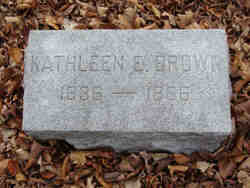

| 
Kathleen Emily FITZPATRICK (Abt 1831-1886) |
Kathleen Emily FITZPATRICK 3780
Cause of her death was peritonitis. Another name for Kathleen was Emily Kathleen FITZPATRICK. General Notes: Lady Castleton and Baroness of Castleton. Catholic. Married a protestant, so Church gave her title and lands to a cousin. Correspondence about this by Lady Walpole. Information told to Eleanor (Capen) Coddington by Lily Chadbourne (ex Papers of Elizabeth Lee (Ayres) Coddington. Noted events in her life were: • Immigration, 1850-1855, New York, New York Co., New York. 3781 • Census, 16 Aug 1860, New York, New York Co., New York. 3781 • Census, 3 Jun 1880, New York, New York Co., New York. 277 • Death Notice, 8 Sep 1886, New York, New York Co., New York. 3780 • Court: her estate, 3 Nov 1894, New York, New York Co., New York. 278 Kathleen married Robert Canning BROWN about 1848.3779 (Robert Canning BROWN was born about 1830 in , , Virginia 3781.) |
|
only search Stockdale Coddington Genealogy |
Table of Contents | Surnames | Name List
This website was created 9 Apr 2025 with Legacy 10.0, a division of MyHeritage.com; content copyrighted and maintained by coddgenealogy at gmail d0t com